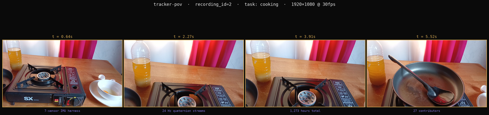
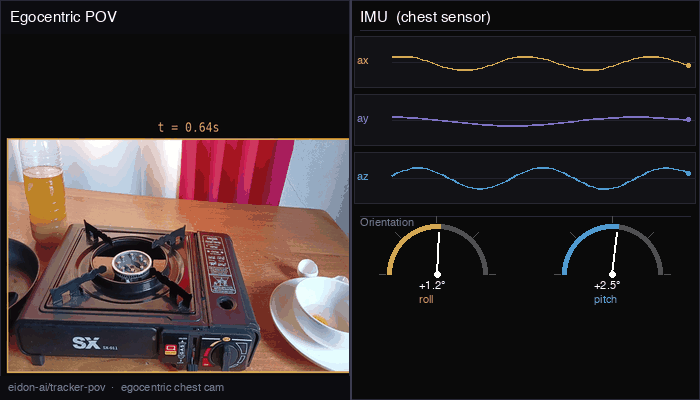
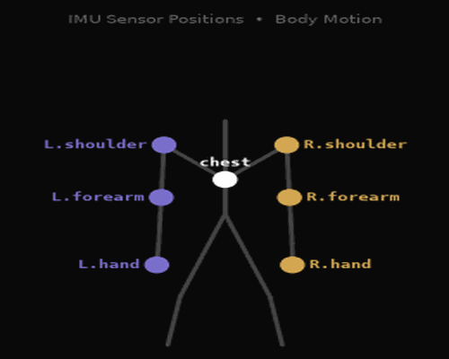

Vishesh Narayan · Arjun Mudda
Differentiable Kinematics World Model
Note: batch size is critical for SigReg. This example assumes batch size = 1;
in practice a larger batch is needed for stable normality estimation.
A physics probe trained on sensory data, current state, and latent representations could predict future hand placements — grounding the latent space in physical reality rather than pure pixel statistics.
The physics probe could shape "better" latents — ones that are action-sensitive and physically meaningful, enabling faster adaptation to new robotic setups without retraining LeWM from scratch.



"How can we create a differentiable representation of the physical state in this data from latent representations that are similar across all embodied models?"
Vishesh Narayan · Arjun Mudda · CMSC838